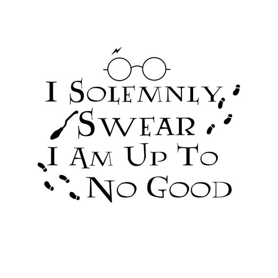
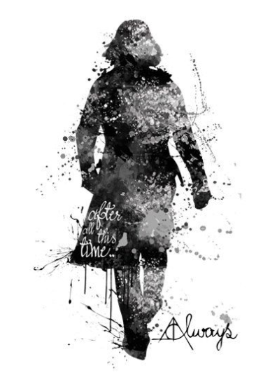
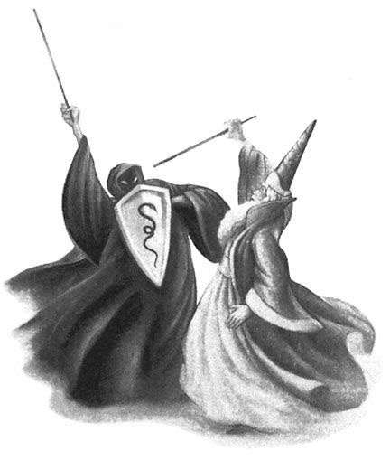
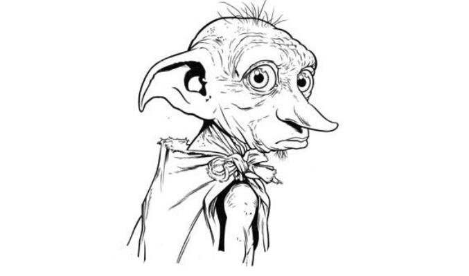
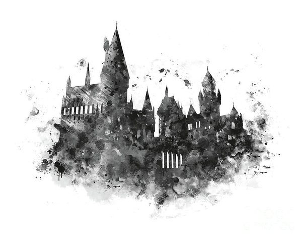

Ethics in IT, am I a Muggle?
I recently started to study Computer Science at National College of Ireland, it feels like I’m in Hogwarts School of Magic from the famous book Harry Potter. I must say it’s a fantastic college and I’m excited to be part of something… big, important, like I have a purpose in life.
I don’t know what my future holds for me but, it’s an amazing feeling and I love it. Jumping on the train platform 3,14(π) with the destination “Ethics in IT”. I’m bound to meet my teacher: (professor Snape: “There will be no foolish wand-waving or silly incantations in this class”)
Professor Snape: “Turn to page 394”
Ethics? – are moral principles that govern a person’s behaviour or the conducting of an activity and recommends concepts of right and wrong. Sounds easy no? If it feels wrong than it is. I can notice that is based on human feelings, and although we have a good understanding of moral principles, feelings might change over time.
Like it was wrong of Harry Potter to lie and pretend to give liquid luck to Ron Weasley for the Quidditch Match. But in the end, we see that it did boost his confidence and they won the game because of Harry’s deception. So, it depends on the outcome if a good or bad moral decision stays good or bad. (Ron Weasley: “You need to sort out your priorities”)
Dark times lie ahead of us
We often don’t see and feel the same thing even if we are doing the same activity. Different people have a different perspective and we tend to overlook other points of view other than our own. When we’ve been introduced to the greatest wizard of all times, Albus Dumbledore, we all seen a man who can drop gems of wisdom that are pure magic and must be morally right.
But after years of reading the story we find out that he deceived us all, he was raising Harry as “a pig for slaughter” and it was just a master plan to fool “you-know-who” to destroy his last Horcrux which was Harry himself. Sometimes we must pause our moral principles for the greater good. (Professor Dumbledore: “Dark times lie ahead of us and there will be a time when we must choose between what is easy and what is right.”)
Bad Dobby! Bad Dobby!
IT Industry brought new challenges for our moral values. When “Dobby” tried to kill lady Bellatrix Lestrange (“Dobby never meant to kill. Dobby only meant to maim, or seriously injure.”), imagine the Death Eaters using Dark Twitter Mark and the message quickly reach all corners of the globe in seconds, it would start a war between elf’s and witches. We all heard the story when someone made a stupid comment on twitter and hours later governments had to intervene and block social media to stop the crisis.
Is it moral to stop freedom of speech? Communication speed and social media expanded the Ethics dilemma to a global scale and created a whole new level of awareness and difficulties where one single tweet can create tensions between countries, overthrow governments and so on. Should we allow “He-Who-Must-Not-Be-Named” to peek from behind the curtains into our private media for the greater good? (“Dobby groaned, more tears dripping onto his ragged pillowcase”)
Help will always be given to those who ask for it
Software and devices reach a new level of precision to monitor anything you do. Just a simple smartphone records so much digital information that you can see your history to the last second. Companies started to implement new systems to monitor employees, making screenshots of any active applications, report activity levels based on keyboard and mouse usage and even peek in your private social media accounts.
It’s morally wrong to peek into someone’s social media account. And what happens with our data, with our privacy? We will need to find a way to hide and build the “Muggle” army against privacy devourers. New businesses already offer a map to hide our steps and take secret routes to our virtual destination without detection. You will simply have to tap “mischief managed” when finished.
From your faithfull Muggle, ...Mischief Managed